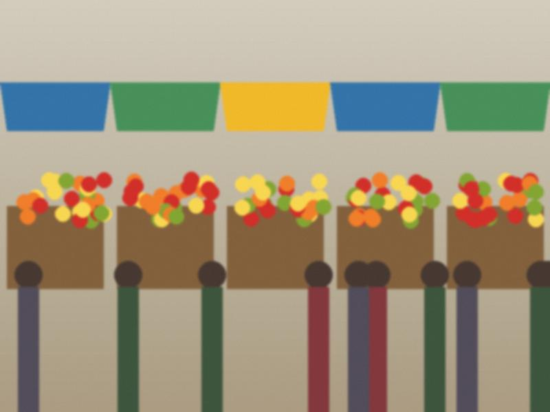
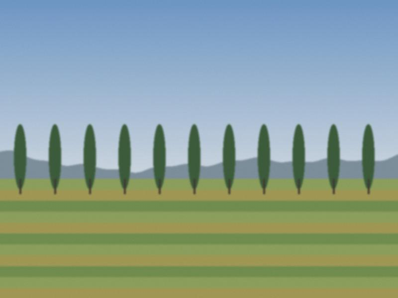

Sümölök is for women with strong arms
Nauryz. On the night before, the women in our street stir a sweet wheat paste all night, in turns, one hour each, each…
♥ 36 · 1 comments
Eer nan: bread shaped like a saddle (it always breaks)
Eer nan is a boat of bread with cheese and an egg yolk in the seat. For a name day. I have tried it nine times. Four…
♥ 123 · 1 comments

Kuurdak after the slaughter
Kuurdak in the big pan. My husband's brother did the meat. Meat in small pieces, liver, kidneys, onion, salt. Fry in…
♥ 24 · 0 comments

Boiled corn at the bazaar gate
The corn woman at the Bazar-i Kalan gate. One cob 1.50 som, hot, salted. I always take two. Jügörü. In the summer the…
♥ 143 · 0 comments
The toi menu, in order of arrival
People ask me what to cook for a wedding. It is not a question of what, it is a question of when. The table has a…
♥ 72 · 2 comments

Cake for 8 March
My granddaughter decorated it. Not a single flower is the same. Honey cake, eight layers. Recipe in the comments if…
♥ 57 · 3 comments
Chuchvara for a minus-ten Sunday
Small dumplings, the size of a thumbnail, that you boil in broth. It takes three people and two hours to make 200, and…
♥ 9 · 0 comments

Boorsok, my grandmother's way
Boorsok and the round bread for New Year. 1 litre warm milk, 50 g yeast, 2 eggs, 100 g butter, a spoon of sugar, salt,…
♥ 84 · 0 comments

Kurut balls for the whole winter
Kurut is dried salty curd. In my house it is not a snack, it is a unit of measure: "two kurut" is how many guests will…
♥ 122 · 0 comments

Honey from one man in Kara-Buura
The hives on the slope above his village. He lets me stand five metres away. Ten years I tried the honey from the…
♥ 126 · 3 comments

Apricot jam, the slow way
From the Iyık Janyl road, three buckets. 5 kg apricots, stones out. 4 kg sugar. Layers in the basin, leave overnight.…
♥ 138 · 1 comments

Plov for 20 people
Plov for my nephew's engagement. The kazan is my mother's. For 20 people: 3 kg rice (the yellow devzira if you find…
♥ 132 · 1 comments